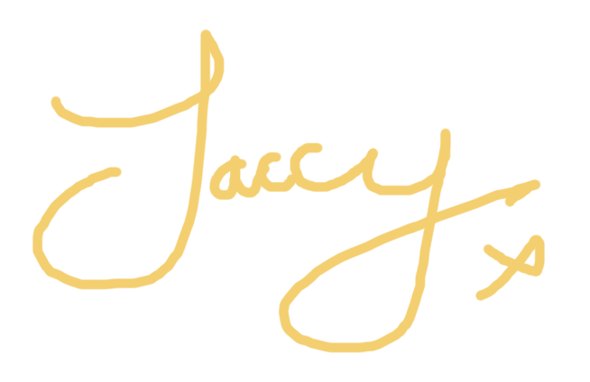

Thank you.
Within the dawning days of December, I had a dream. A world in which mental health is eradicated and where jollity and rapture emanated throughout humanity.
Unfortunately, whilst it was a mere figment of my high-functioning imagination, the powerful concept and willingness to help contribute to the crisis was alive.
Throughout December, I was determined to inspire change and decrease the stigma surrounding mental health.
Being someone who consistently struggles with mental health, it's important for myself to highlight the significance of changing the landscape.
Sadly, whilst I may not have been able to carry through with my dream, I gathered the best minds I knew to help contribute to this journey in succeeding.
Through the short timespan, £85 was raised and donated to the Scottish Association for Mental Health.
An astonishing achievement to show how far we've all come in the voyage of redefining what it means to have poor mental health.
I want to say a very special thank you to all the livestreamers who participated in the event: Stringy, Doggy, Tom and Ewan.
I also want to say a special thank you to everyone who donated their valuable savings to help an even more valuable cause: to help prevent suicide.
Suicide should never be the final option for anyone.
If you feel like you need help or someone you love requires it, you can call SAMH or visit their website for more information.
Thank you so much again for your kind and inspiring actions you've given. They are not taken for granted.
